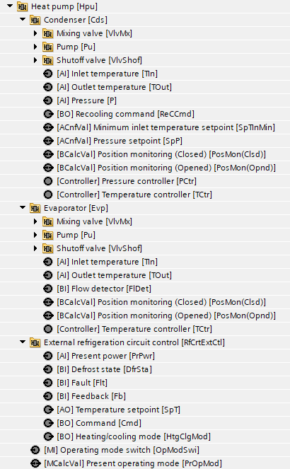
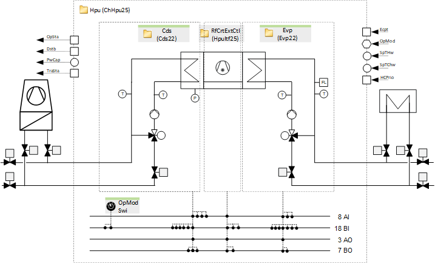
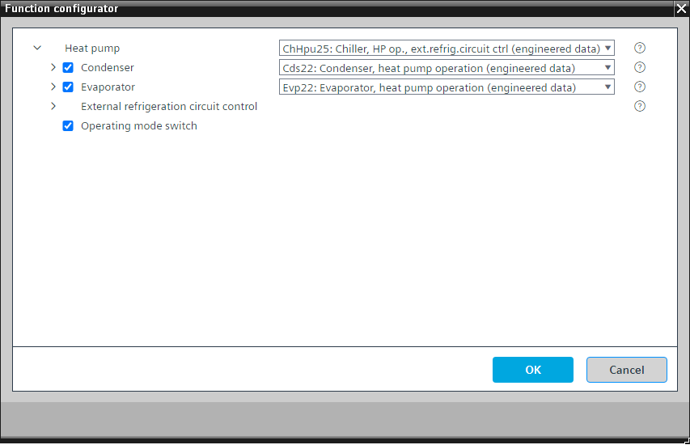

[ChHpu25] 冷水机，带热回收/heat泵操作，带外部制冷回路控制
Program block, name / node subtype: [ChHpu25] 冷水机，带热回收/heat泵操作，带外部制冷回路控制
Library hierarchy: Cooling and refrigeration equipment
Family: Hpu
项目树 | 图表 |
|---|---|
 |  |
Configurator


程序块存储在没有 I/Os. 的库中 使用auto-create and auto-connect函数创建 I/Os 和 /or 将它们连接到接口块，例如 R_A、CMD_B。或者，从包含库中预定义 I/Os 的文件夹中取出 I/Os，并从工厂中取出 /or，并将它们连接到接口块。
控制针对热回收/heat泵运行进行优化的冷却器。
程序中对冷水机的标称功率和开关时的瞬态时间进行了设置（表示冷水机处于瞬态状态的信号，该信号会阻止为功率控制和补偿生成进一步升压或降压脉冲的逻辑）。例如，打开时5分钟，关闭时2分钟。
冷水机控制单元 (HpuItf25) 的接口可启用该功能，发送设定值（它会根据加热或冷却优先级信号而变化）并读取故障、反馈、除霜状态和当前功率的可选信号。
冷凝器、蒸发器以及控制单元接口的开启和关闭顺序在功能块 CMDSEQ_B 中定义。
该程序块具有以下可选功能：
Option: Condenser (4xAI, 6xBI, 1xAO, 3xBO)
控制针对热回收/heat泵运行进行优化的冷凝器(Cds22)。
如果需要热水，它可以控制出口温度。在不需要热水的情况下，它可以控制入口温度并发出需要重新冷却的信号。还有一个可选的压力控制。
Option: Evaporator (3xAI, 7xBI, 1xAO, 2xBO)
控制针对热泵运行进行优化的蒸发器 (Evp22)。
如果需要冷冻水，它可以控制出口温度。
Option: Operating mode switch (1xMI=2xBI)
读取操作模式开关的状态，通常位于电气面板的前面，状态为“自动”、“关闭”和“打开”。
姓名 | 描述 | 类型 | 报警/通知类 | 趋势/类型 | |
|---|---|---|---|---|---|
|
RfCrtExtCtl | External refrigeration circuit control | N/A | N/A | ||
姓名 | 描述 | 类型 | 报警/通知类 | 趋势/类型 | |
|---|---|---|---|---|---|
|
Evp | Evaporator | N/A | N/A | ||
Cds | Condenser | N/A | N/A | ||
OpModSwi | Operating mode switch | MI：多态输入 | No | 是的，4 | |